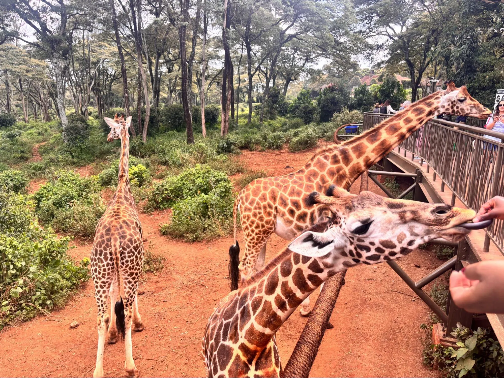
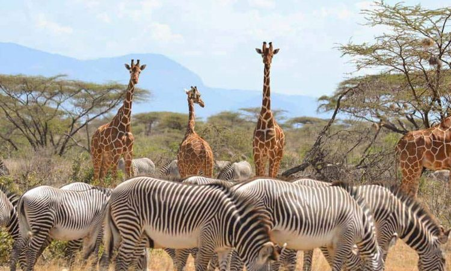

Embark on our 11 days magical Kenya wildlife and cultural adventure for a Kenya safari experience with immersive community encounters. Blend legendary game tracking across top sanctuaries with authentic heritage interactions.

Days 1 & 2: Arrival in Nairobi — Karibu Kenya & Giraffe Centre
Welcome to Kenya! Upon arrival at Jomo Kenyatta International Airport (NBO), you will be warmly welcomed by an Arena Africa Safaris representative and transferred to your boutique hotel. Spend Day 2 exploring Nairobi's conservation highlights, beginning with an intimate visit to the Giraffe Centre to hand-feed endangered Rothschild's giraffes. Follow this with a visit to the historic Karen Blixen Museum and a premium welcome dinner showcasing authentic local culinary flavors.

Days 3 & 4: Nairobi to Ol Pejeta Conservancy — Rhino Conservation
Depart Nairobi via a private 4×4 safari Land Cruiser, heading north through lush agricultural landscapes to the pristine plains of Ol Pejeta Conservancy. Positioned on the equator with striking views of Mount Kenya, this premier private sanctuary hosts a high population of black rhinos and the world's last remaining northern white rhinos. Enjoy structured tracking safaris, visit the Sweetwaters Chimpanzee Sanctuary to meet rescued primates, and learn directly from dedicated local anti-poaching rangers.

Days 5 & 6: Ol Pejeta to Samburu National Reserve — Arid Wilderness
Journey further north into the rugged, beautiful landscapes of Samburu National Reserve, carved by the Ewaso Ng'iro River. This semi-arid region offers high-impact wildlife viewing featuring Samburu's iconic "Special Five": the Reticulated giraffe, Grevy's zebra, Somali ostrich, Beisa oryx, and the long-necked gerenuk. Track lions, leopards, and large elephant herds along the river banks, and enjoy an authentic cultural immersion inside a traditional Samburu community village.

Days 7 & 8: Samburu to Lake Nakuru National Park — Rhino & Birdlife
Drive south down into the floor of the Great Rift Valley to reach Lake Nakuru National Park. Celebrated globally as a highly successful black and white rhinoceros sanctuary, this park offers outstanding predator tracking runs. Embark on early morning game drives to photograph resident rhinos, rare Rothschild's giraffes, and tree-climbing lions. Explore Baboon Cliff for panoramic views over the lake shores populated by spectacular seasonal birdlife and flamingos.

Days 9 & 10: Lake Nakuru to Maasai Mara National Reserve — The Great Plains
Traverse through the stunning scenic escarpments of the Rift Valley to arrive at the world-renowned Maasai Mara National Reserve. Spend these days on intensive overland game drives tracking down Africa's legendary Big Five and massive herds of migrating wildebeests and zebras. Optional opportunities include a sunrise hot air balloon safari over the vast Mara savanna plains followed by a champagne bush breakfast, alongside rich cultural village encounters with local Maasai communities.

Day 11: Maasai Mara to Nairobi — Final Game Drive & Departure
End of OperationsEnjoy a final early morning farewell game drive as you exit the reserve, tracking active predators in the soft morning light. Board your private 4×4 safari Land Cruiser for your return road transfer back across the Rift Valley to Nairobi. Arrive in the city in the late afternoon for your direct drop-off transfer to Jomo Kenyatta International Airport (NBO) to catch your international flight homeward.
"Thank you for choosing our company"